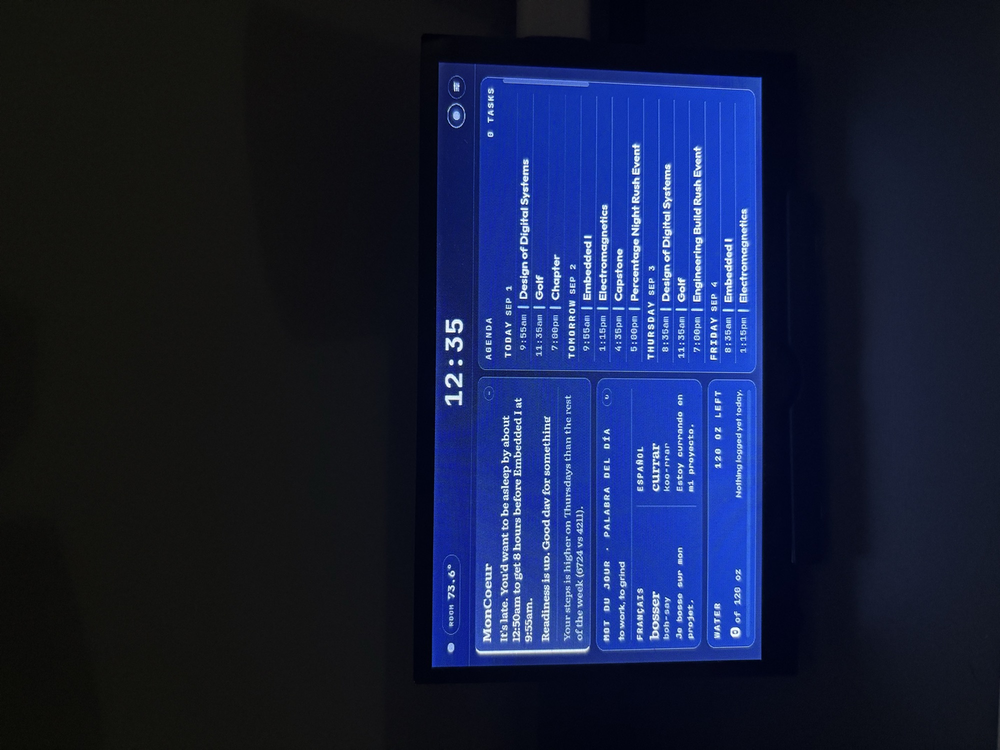

MonCoeur
A Raspberry Pi that runs my room: lighting, display power, sleep tracking, and an always-on dashboard. I called it JARVIS when I started it in 2025 and renamed it MonCoeur in the rebuild. It's been running for over a year and it's the project I keep coming back to.
Problem
I wanted my room to react on its own instead of waiting for me to open an app.
A smart bulb with an app still needs a person tapping a phone. I wanted to see if the room could handle some of that itself: if it can read its own temperature, my calendar, and the weather, it should be able to make small decisions without me.
There was a second reason. I get migraines, and I could never tell what set them off. Logging sleep, hydration, exercise and room temperature in one place was the only way I was going to find the pattern.
Plan
Three parts: sensing the room, acting on it, and keeping it all running.
Sensing
A temperature and humidity sensor reads the room over I²C. One motion sensor ended up doing three jobs: turning lights on when I walk in at night, logging motion while I'm away, and treating forty minutes of stillness as me falling asleep. Calendar and weather APIs fill in what the room can't sense.
Knowing if the room is empty
Motion on its own can't tell me apart from anyone else, so I needed a way for the room to know whether I'm home.
My first thought was the Oura ring I already wear. That doesn't work: the ring pairs with a single phone and broadcasts nothing the Pi can pick up. Bluetooth was the next plan, and it ran into a constraint I had built myself. The Flic button's daemon claims the Pi's Bluetooth radio exclusively, so nothing else can scan while it is running. Presence looks for my phone on the network instead, with a ping and the ARP table.
In range means I'm home. Gone for a while means the room is empty and should arm itself, and motion while it's armed is someone who isn't me. That turns the motion sensor I already have into a quiet security system without adding hardware. The demo below shows the home, away and entry states; the phone alerts over ntfy are the part I'm wiring up now.
Acting
Lighting runs over the local network directly to the bulbs, no vendor cloud involved. For the monitor I used DDC/CI, the display's own control channel, instead of the usual smart plug. A plug can only cut power; talking to the display directly let me actually dim it gradually, which is what I wanted for mornings.
Talking to it
There are four ways in: the wall display, a Bluetooth button on the desk, an iPhone shortcut, and speech. The speech side runs entirely on the Pi, the wake word and the recognition and the voice that answers, so asking what the room is at never leaves the house. Nothing here needs someone else's cloud to keep working.
Staying up
Everything runs as a systemd service that starts on boot and restarts if it crashes. Getting that right is a big part of why it's still running a year later.
Trials & Errors
The first version worked, and I still stopped using it within a week.
I built the first version over a spring break as a web page on the local network. It worked fine, but opening a browser to check my own room was annoying, and I couldn't read the layout from across the room. Nothing was broken. I had just built the wrong thing.
The rebuild became an always-on display with one rule: I should be able to read everything from my bed. That rule shaped the whole interface, and it's also why I needed control over the display's brightness, which led me to DDC/CI.
My favorite part is the summary panel. The calendar shows events, the sensors show readings, the weather shows weather, but one panel pulls it all together into a short summary of what I actually need to know. That's the part that makes it feel like a system instead of a wall of numbers.
Result
It's been running since early 2025, and you can try the interface below.
This is the real interface running on made-up data. Feel free to click around.
